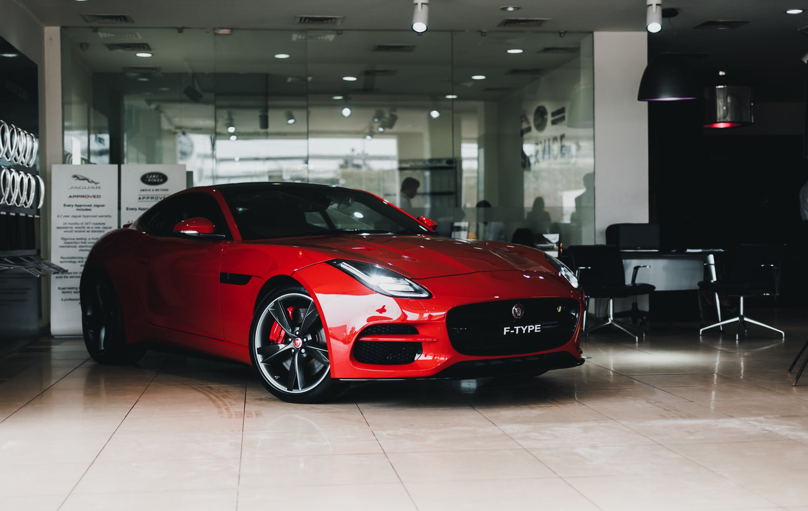

I worked as a lead project engineer, where I looked after multiple components (Cooling pipes, block heaters and dipsticks) for new Ingenium engine family across diesel and petrol. The projects are across various vehicle platforms. I lead the initial concept design that meets the design rules and standards, then liaise with the buyer to source a supplier. Once a supplier has been given acknowledgment, I work aligned with the supplier for manufacture feasibility on the design. Check over the package clearance checks of my components to the surrounding parts. I look over the supplier quotation, start the WERS release and check the support plan will meet the build date events. I also order any prototype pieces or tooling for testing or meet late build events. I also support the engine test engineer to carry out various engine test to validate my components robustness (critical speed, PV test). I continually review the delivery milestones and gateways, reviewing DFMEA, supplement K’s, RMDV and supplier timing to deliver robust design and quality.
